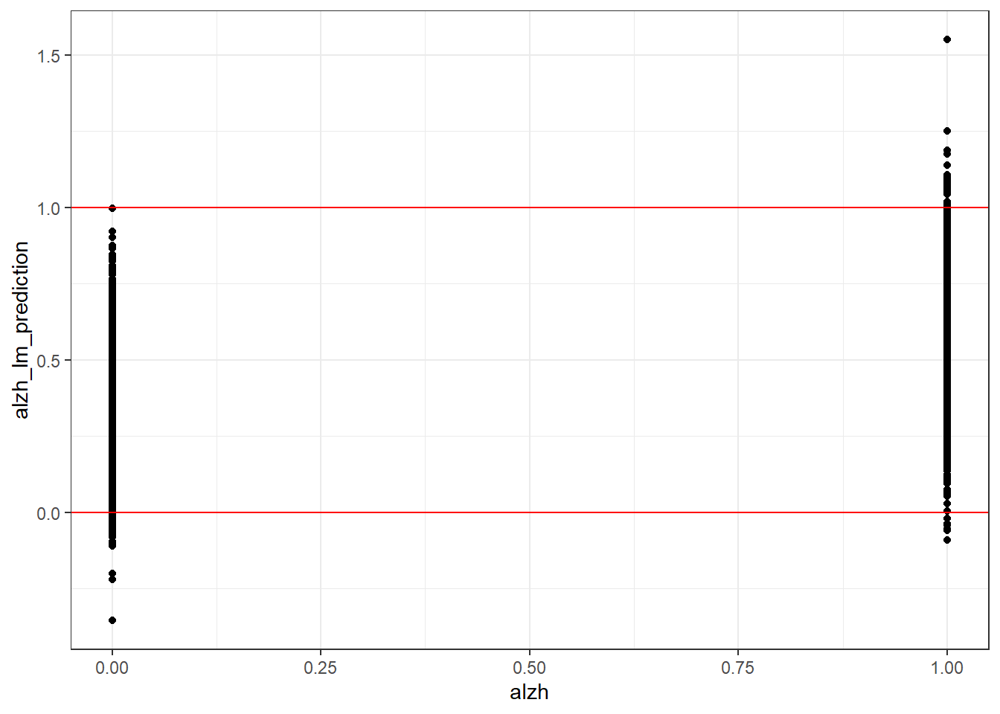
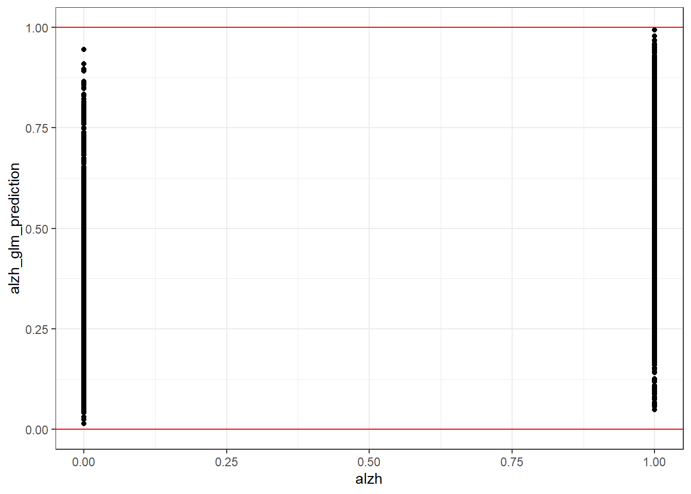

\(\beta_1\) is the change in log odds for a one unit increase in \(X\).
\(e^{\beta_1}\) is the odds ratio for a one unit increase in \(X\).
\(e^{\beta_1} -1\) is the percent increase/decrease in odds for a one unit increase in \(X\).
Count data as response variable
Poisson regression (GLM)
\(\log(\lambda_i) = \beta_0 + \beta_1 X\)
\(\beta_1\) is the log rate ratio (or relative risk or multiplicative change in risk) for a one unit increase in \(X\).
\(e^{\beta_1}\) is the rate ratio for a one unit increase in \(X\).
Categorical (3+) response variable
Multinomial logistic regression (GLM)
Let’s not worry about it…
Each category level of the model is interpreted as if it is a logistic regression, with respect to the same reference group.
Comments about Multionomial logistic regression:
“Multinomial logistic regression for a response with J + 1 categories is analogous to simultaneously fitting J logistic regressions with the same reference group
Although the choice of reference is arbitrary (models with different reference groups are simply reparameterizations of one another), it is usually easiest to choose the most common outcome as the reference group
In general, simultaneous estimation will lead to a more efficient model than the separate logistic regressions” - Bin Nan
2
What test can we use to compare two nested models (i.e. One model has a subset of the covariates of the other model)?
Solution
We can do this with the likelihood ratio test.
Logistic regression
If we made an alzheimer diagnosis variable alzh then we have a binary response variable.
library(tidyverse)
── Attaching core tidyverse packages ──────────────────────── tidyverse 2.0.0 ──
✔ dplyr 1.1.2 ✔ readr 2.1.4
✔ forcats 1.0.0 ✔ stringr 1.5.0
✔ ggplot2 3.4.2 ✔ tibble 3.2.1
✔ lubridate 1.9.2 ✔ tidyr 1.3.0
✔ purrr 1.0.1
── Conflicts ────────────────────────────────────────── tidyverse_conflicts() ──
✖ dplyr::filter() masks stats::filter()
✖ dplyr::lag() masks stats::lag()
ℹ Use the conflicted package (<http://conflicted.r-lib.org/>) to force all conflicts to become errors
We can fit a linear model and we won’t get an error (even though linear model assumption are violated), but does it provide any useful information?
alzheimer_lm <-lm(alzh ~ age + female + educ + lhippo + rhippo, data = alzheimer)alzheimer %>%mutate(alzh_lm_prediction =predict(alzheimer_lm)) %>%ggplot(aes(x = alzh, y = alzh_lm_prediction)) +geom_point() +geom_hline(yintercept =c(0, 1), color ="red") +theme_bw()

Solution
An assumption of the linear model is that the errors, and therefore the response variable is normally distributed, so the possible values range from \((-\infty, \infty)\). Here the expected value of our response variable is the probability of having Alzheimers, which is bounded between 0 and 1, so the linear model will predict impossible values.
1
Instead let’s fit a logistic model since we have a binary response variable. Fit the logistic model with alzh as the response variable and the same covariates as the linear model fit above. Save the model fit into a variable named alzheimer_glm.
Solution
alzheimer_glm <-glm(alzh ~ age + female + educ + lhippo, family = binomial, data = alzheimer)
Run this code to produce a plot of the predicted values after you have fit the model.
alzheimer %>%mutate(alzh_glm_prediction =predict(alzheimer_glm, type ="response")) %>%ggplot(aes(x = alzh, y = alzh_glm_prediction)) +geom_point() +geom_hline(yintercept =c(0, 1), color ="red") +theme_bw()

2a
Provide an interpretation in context for the coefficient of age in the logistic model. Also, compute the 95% confidence interval for this coefficient.
Solution
You can look at the model summary for the necessary information
For people with common sex, education, and left hippocampus volume, we estimate a one year increase in age to be associated with a **log odds ratio* of having Alzheimers of 0.0181.
Now, let’s compute the confidence interval. I suggest doing this manually (i.e. not using a function, so you are clear on how it is calculated).
We estimate the log odds ratio of having Alzheimers associated with an increase of one year of age to be between 0.0098 and 0.0265 with 95% confidence, when controlling for sex, education, and left hippocampus volume.
2b
Provide an interpretation in context for the exponentiated coefficient of age in the logistic model. Also, compute the 95% confidence interval for this coefficient.
For people with common sex, education, and left hippocampus volume, we estimate a one year increase in age to be associated with a an odds ratio of having Alzheimers of 1.0183. We estimate this value to be between 1.0099 and 1.0268 with 95% confidence.
2c
Calculate the estimate and 95% confidence interval for the percent change in odds associated with a 1 year difference in age, controlling for the other predictors.
For people with common sex, education, and left hippocampus volume, we estimate a one year increase in age to be associated with a 1.8303% increase in the odds of having Alzheimers. We estimate this value to be between 0.9864% and 2.6813% with 95% confidence.
2d
Which transformation of the estimate of the coefficient of age is most interpretable to you?
Solution
The interpretation from 2c would be most interpretable to someone who does not know statistics and therefore does not know what an odds ratio is.
3a
Provide an interpretation in context for the coefficient of female in the logistic model. Also, compute the 95% confidence interval for this coefficient.
For people with common age, education, and left hippocampus volume, we estimate that females, compared to males, are associated with a log odds ratio of having Alzheimers of -1.3202. We estimate this quantity to be between -1.5094 and -1.131 with 95% confidence.
3b
Provide an interpretation in context for the exponentiated coefficient of female in the logistic model. Also, compute the 95% confidence interval for this coefficient.
For people with common age, education, and left hippocampus volume, we estimate that females, compared to males, are associated with an ** odds ratio** of having Alzheimers of 0.2671. We estimate this quantity to be between 0.221 and 0.3227 with 95% confidence.
For people with common age, education, and left hippocampus volume, we estimate that females have a 73.2919% decrease in odds of having Alzheimers, relative to males. We estimate this quantity to be between 77.896 and 67.7289 with 95% confidence.
Fit generalized linear model regressing number of spikes on image category without an intercept (add “-1” to regression equation to remove intercept). Save your regression into a variable named poisson_fit.
# Fit generalized linear model# Poisson GLM with the default log link functionpoisson_fit <-glm( n_spikes ~ image_categ -1,data = chosen_neuron_data,family =poisson(link="log"))
Tabulate the coefficient estimates using the code below.
We estimate the neuron rate to be between rround(exp_animal_coeff_est, 3)for people shown an image of an animal. We are 95% confidence the rate is betweenr round(exp_animal_coeff_ci[1], 3) and rround(exp_animal_coeff_ci2, 3)`.
1c
What would be the interpretation of the coefficient for animal if there was an intercept?
Solution
If we had an intercept, then one level of our categorical predictor would have to be the reference group to avoid multicolinearity.
Here we have two different possible scenarios, where animal is the reference group and when it is not.
# Fit generalized linear model# Poisson GLM with the default log link functionpoisson_fit <-glm( n_spikes ~ image_categ,data = chosen_neuron_data,family =poisson(link="log"))summary(poisson_fit)
Call:
glm(formula = n_spikes ~ image_categ, family = poisson(link = "log"),
data = chosen_neuron_data)
Coefficients:
Estimate Std. Error z value Pr(>|z|)
(Intercept) -2.996e+00 1.000e+00 -2.996 0.00274 **
image_categFruit 4.277e+00 1.007e+00 4.247 2.16e-05 ***
image_categKids 1.099e+00 1.155e+00 0.951 0.34139
image_categMilitary 1.609e+00 1.095e+00 1.469 0.14178
image_categSpace 2.120e-15 1.414e+00 0.000 1.00000
---
Signif. codes: 0 '***' 0.001 '**' 0.01 '*' 0.05 '.' 0.1 ' ' 1
(Dispersion parameter for poisson family taken to be 1)
Null deviance: 260.985 on 99 degrees of freedom
Residual deviance: 81.213 on 95 degrees of freedom
AIC: 163.18
Number of Fisher Scoring iterations: 6
Animal was made the reference group by default since it is the first category present.
In this model, since we have a reference group, \(\beta_1\) is the log rate ratio for people shown an animal image compared to those shown a fruit image.
# Start by manually specifying the category order # The first is the reference groupchosen_neuron_data_releveled <- chosen_neuron_data %>%mutate(image_categ =factor( image_categ,levels =c("Fruit", "Animal", "Kids", "Military", "Space") ))poisson_fit <-glm( n_spikes ~ image_categ,data = chosen_neuron_data_releveled,family =poisson(link="log"))(poisson_fit_summary <-summary(poisson_fit))
Call:
glm(formula = n_spikes ~ image_categ, family = poisson(link = "log"),
data = chosen_neuron_data_releveled)
Coefficients:
Estimate Std. Error z value Pr(>|z|)
(Intercept) 1.2809 0.1179 10.869 < 2e-16 ***
image_categAnimal -4.2767 1.0069 -4.247 2.16e-05 ***
image_categKids -3.1781 0.5893 -5.393 6.92e-08 ***
image_categMilitary -2.6672 0.4625 -5.767 8.06e-09 ***
image_categSpace -4.2767 1.0069 -4.247 2.16e-05 ***
---
Signif. codes: 0 '***' 0.001 '**' 0.01 '*' 0.05 '.' 0.1 ' ' 1
(Dispersion parameter for poisson family taken to be 1)
Null deviance: 260.985 on 99 degrees of freedom
Residual deviance: 81.213 on 95 degrees of freedom
AIC: 163.18
Number of Fisher Scoring iterations: 6
To get the estimate for the rate for people shown an animal (not relative to a reference group) we would add the coefficients \(\beta_0\) and \(\beta_1\).